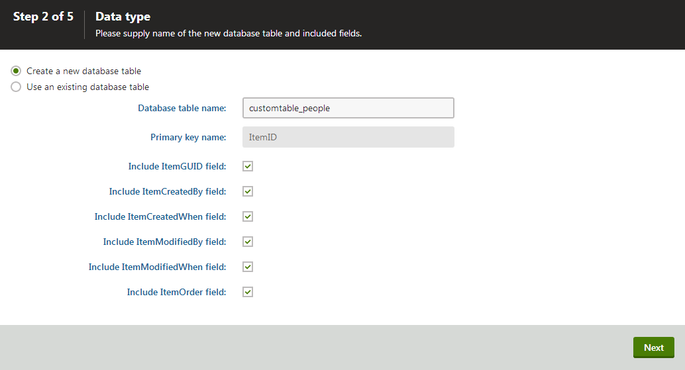
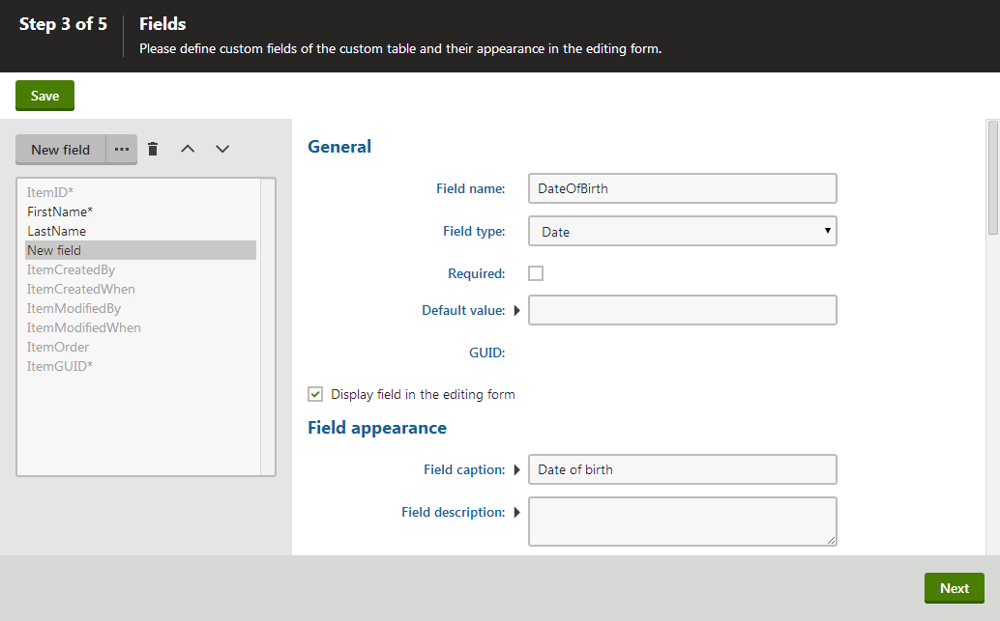

Creating custom tables
There are two applications related to custom tables in Kentico:
Custom tables application allows you to create new custom tables, given you possess the global administrator privilege level. You can also view and manipulate data in existing tables using this interface.
Custom table data application allows you to view and manipulate data in existing custom tables only.
Note that you can create new custom tables using the wizard in the Custom tables application only. There is currently no simple way of creating custom tables using the API. This is due to the need to create related objects and settings — these tasks are handled by the wizard.
Creating a custom table
Follow the example to create a new custom table using the New custom table wizard.
Starting the New custom table wizard
Open the Custom tables application.
Click New custom table. A New custom table wizard starts.
Step 1
Enter the following details:
Custom table display name: People
display name is used in Kentico user interface.
Namespace: customtable
Name: people
Name is used in website code — always preceded by a Namespace, which allows you to have different tables of the same name in different contexts.
Click Next.

Entering the details of the new custom table
Step 2
Specify the details of the database table that the custom table uses.
Choose Create a new database table.
Leave the value customtable_People in the Database table name field.
Make sure all the checkboxes are enabled.
Click Next.

Step 3
Third step contains a field editor. The field editor lets you define the columns in the database table.
Create the following fields to follow this example:
Create a field using the New field button with the following properties:
Field name: FirstName
Data type: Text
Size: 100
Required: Yes (check the box)
Field caption: First name
Form control: Text box
Click Save.
Create a second field using New field with the following properties:
Field name: LastName
Data type: Text
Size: 100
Required: Yes (check the box)
Field caption: Last name
Form control: Text box
Click Save.
Create a third field using New field with the following properties:
Field name: DateOfBirth
Data type: Date
Required: No (leave the box unchecked)
Field caption: Date of birth
Form control: Calendar
Editing control settings -> Edit time: No
Editing control settings -> Show 'Now' link: No
Click Save.
Click Next.

Creating fields for the custom table
Step 4
Select for which sites you want to make the custom table available
Click Add sites. A dialog box opens.
Choose Corporate Site (or any site that you want to add the custom table to).
Click Next.
Step 5
The last step gives you an overview of the tasks executed by the wizard.
Finish the wizard. The system redirects you to the General tab of the custom table that you created.